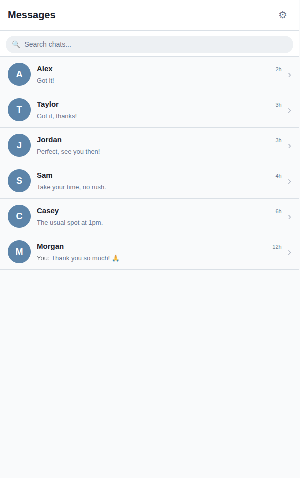

created using React & TypeScript

This final year dissertation explores how private one-to-one messaging platforms can provide users with greater control before and after sending a message.
Existing messaging applications usually deliver messages immediately and only provide users with control after a message has already been sent. Features such as "Delete for Everyone" can also create uncertainty because a message may have already been viewed, captured in a notification, or screenshotted.
To investigate a better approach, I designed and developed a functional private messaging prototype that introduces both pre-send and post-send message control. The aim was to improve user agency, transparency and confidence while maintaining a simple and familiar messaging experience.
The application was developed using a modular, component-based architecture. Individual React components are responsible for different areas of the messaging interface, including the chat list, message display, message input, message bubbles and modal windows.
The application's messaging logic is separated from the user interface using a custom React hook. This manages conversations, message states, sending behaviour, undo functionality and message removal while keeping the visual components easier to maintain.
The prototype operates on the client side using local state and timed transitions. This allowed the project to focus specifically on testing the interaction design and user experience of the proposed messaging controls.
The system was developed through an iterative user-centred design process. Research began with a literature review and semi-structured interviews to understand how users experience message regret, deletion and loss of control after sending.
These findings were used to create and progressively refine low-to-mid fidelity, high-fidelity and finally functional prototypes. User testing was carried out across four iterative research rounds, with feedback from each stage influencing the following version of the design.
Evaluation of the final prototype showed that users responded positively to both the pre-send and post-send control mechanisms. Participants particularly valued honest communication about the limitations of message deletion rather than being given false reassurance that deleted content was guaranteed to disappear.
The configurable pre-send undo mechanism also increased users' perceived sense of agency by providing an opportunity to reconsider a message before it became fully delivered.
By the final round of testing, the majority of usability issues identified during earlier prototypes had been resolved, with participants demonstrating a strong understanding of the system's behaviour and responding positively to its feedback mechanisms.